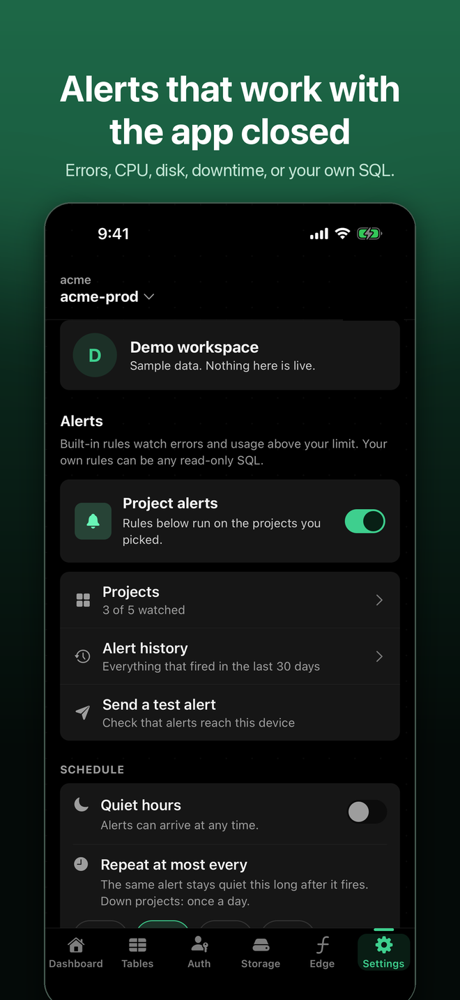
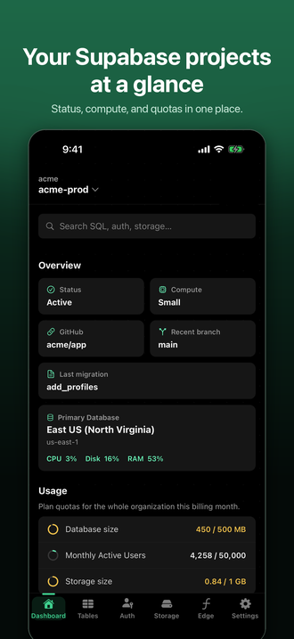
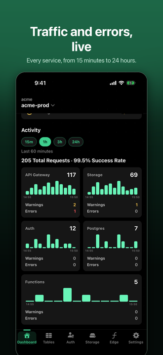
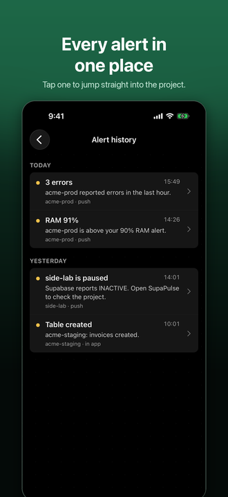
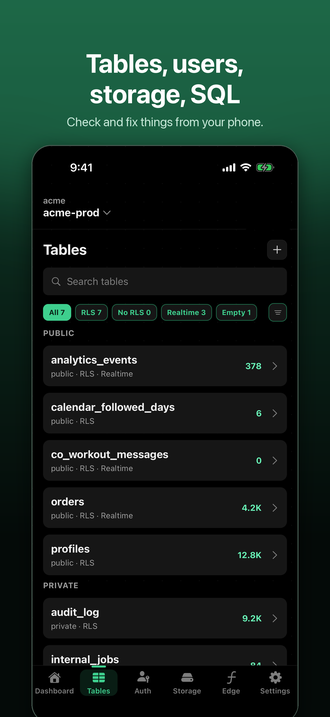

Alerts that matter
A project goes down or gets paused. Errors spike in the API, auth, storage, Postgres, or functions. CPU, RAM, or disk crosses your limit. Or any read-only SQL check you write.
For developers who ship on Supabase
SupaPulse watches your projects every 5 minutes and sends a push when something is wrong — even when the app is closed.

A project goes down or gets paused. Errors spike in the API, auth, storage, Postgres, or functions. CPU, RAM, or disk crosses your limit. Or any read-only SQL check you write.
Connect with Supabase sign-in and our server checks up to five projects every 5 minutes. Quiet hours and repeat limits keep it calm at night.
Status, compute, quotas, traffic by service, tables, auth users, storage buckets, edge functions, and a SQL editor that defaults to read-only.
No ads, no analytics, no tracking. Access tokens stay in the iOS Keychain. Server-side sessions are encrypted with AES-256-GCM. Delete your account in one tap.




No. You sign in on supabase.com and authorize SupaPulse for one organization. You can revoke it any time in your Supabase organization settings.
Yes. It stays in the iOS Keychain and is never saved on our server, so alerts then only fire while the app is open.
No. SupaPulse is an independent third-party app and is not affiliated with or endorsed by Supabase Inc.
Yes. Open the app and tap “Explore the demo” to see every screen with sample data.